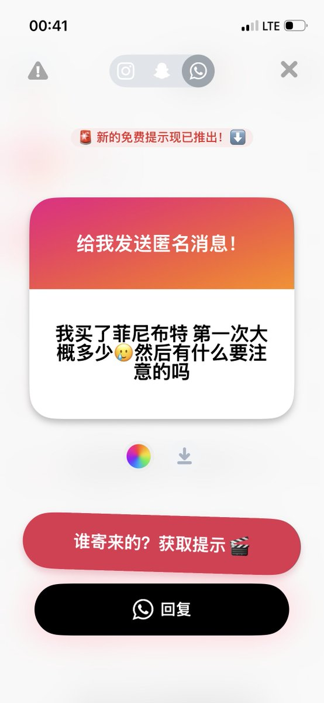
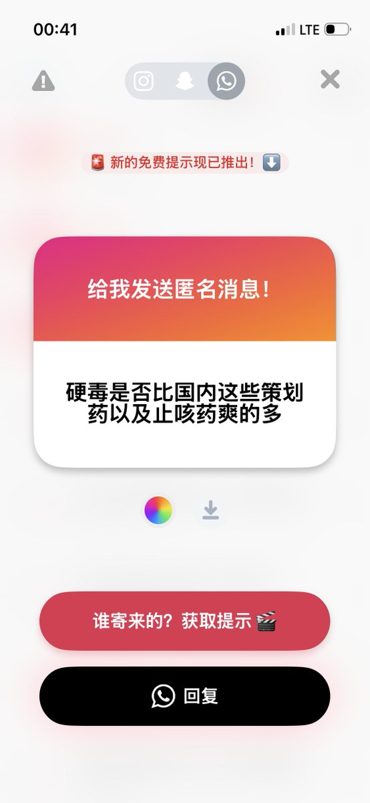
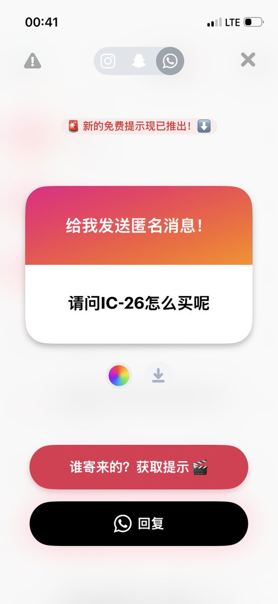
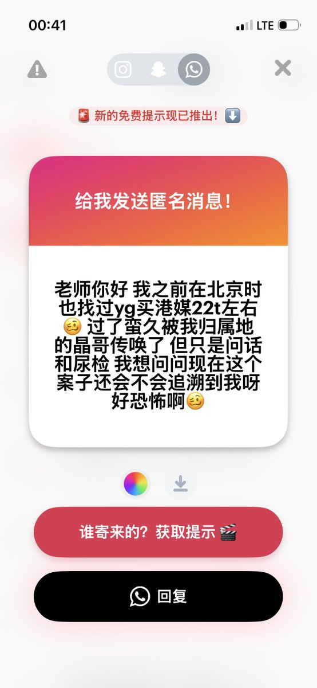

foes
@seeFvn
@xx1012000456 菲尼布特是化工没有办法做到 tablets 为单位，一般剂量是4g以内如果没有耐受的话 巴氯芬吃多肯定会晕过去的呃呃
（仅个人经历分享）




x-square「公子」様
@xx1012000456
1.这东西我也不熟不过剂量请控制在10t内吧，它的类似物巴氯芬我知道的报告有好几个过量进医院的
2.啊这😅我也没吃过啊
3.1161我不清楚啊，不知道有没有卖试剂的，可能要试剂代购？
4.追不到你放心，你的指定管辖不在北京 https://t.co/Si0LFs5ovV